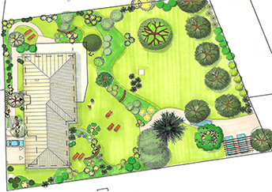
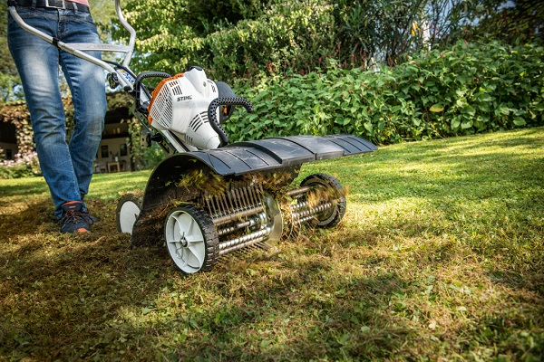
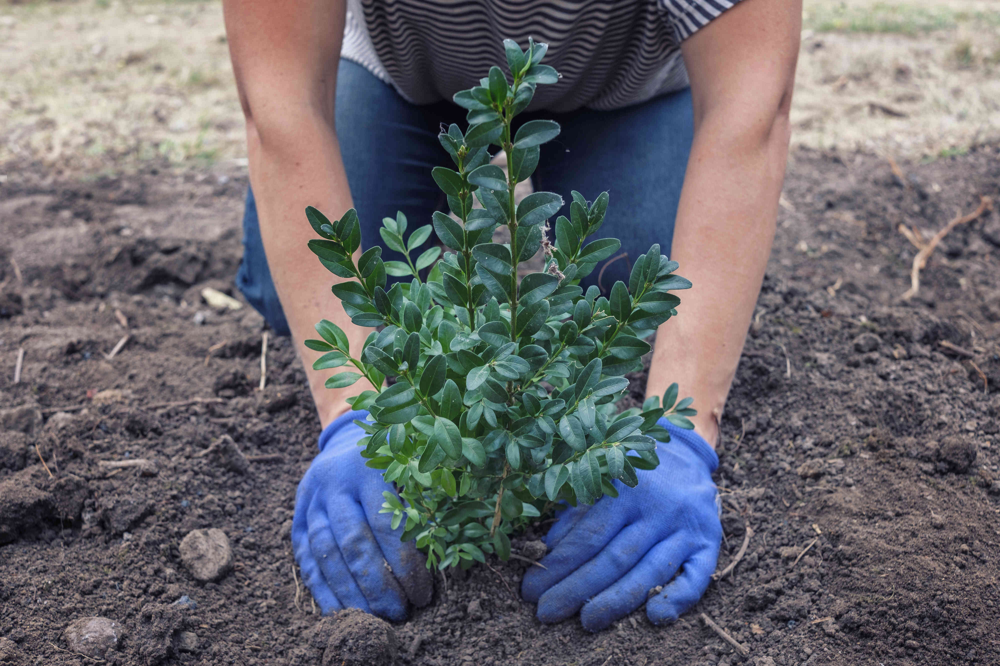
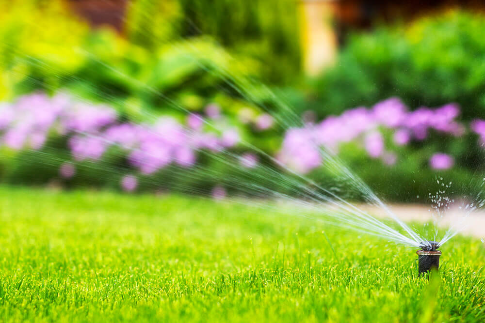
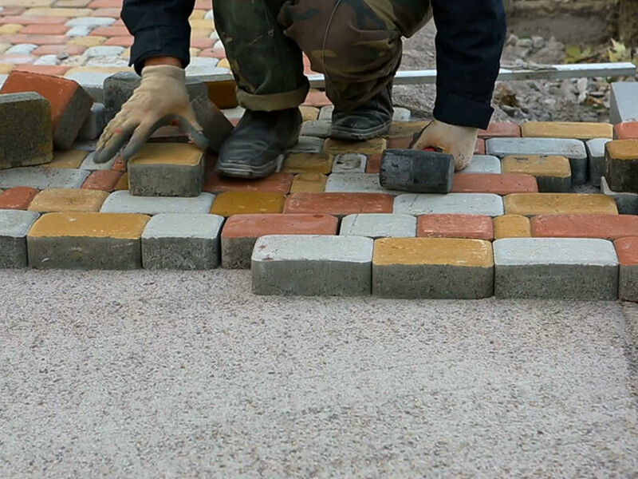

Kerttervezés
Egyedi igényekre szabott kertterveket készítünk, figyelembe véve a terület adottságait, a környezeti tényezőket és az Ön elképzeléseit. A harmonikus elrendezés és a funkcionalitás számunkra egyaránt fontos.

Kertépítés, kivitelezés
A jóváhagyott tervek alapján precíz és megbízható kivitelezést végzünk. Legyen szó tereprendezésről, növénytelepítésről vagy burkolatok kialakításáról, munkánkat magas minőségben végezzük.

Növénytelepítés
Fákat, cserjéket, évelőket és dísznövényeket telepítünk, amelyek illeszkednek a kert stílusához és a helyi adottságokhoz, biztosítva a hosszú távú szépséget.

Öntözőrendszerek telepítése
Automata öntözőrendszerekkel gondoskodunk arról, hogy kertje mindig megfelelő vízellátást kapjon, miközben időt és energiát takarít meg.

Kerti burkolatok és kiegészítők
Praktikus és esztétikus beton elemek épírése.
- Térkövezés
- Járdák
- Teraszok
- Szegélyek
- Egyéb kerti elemek kivitelezése
Kertfenntartás
Rendszeres vagy alkalmi kertgondozást vállalunk: fűnyírás, metszés, gyommentesítés, szezonális munkák – hogy kertje mindig ápolt legyen.